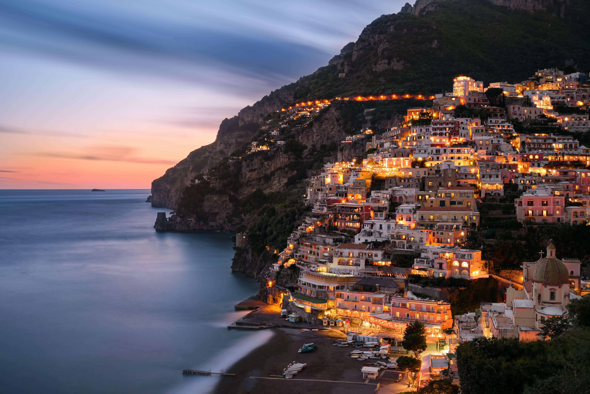

Positano é uma das joias mais encantadoras da Costa Amalfitana, no sul da Itália. Com suas casinhas coloridas empilhadas nas encostas íngremes que descem até o mar Tirreno, a cidade parece uma pintura. É um destino famoso por sua beleza deslumbrante, atmosfera romântica e seu charme mediterrâneo. Originalmente um pequeno vilarejo de pescadores, Positano ganhou notoriedade no século XX, quando artistas e escritores começaram a visitar a região, atraídos pela paisagem dramática e a tranquilidade. Suas casas em tons de pastel e terraço, ruas estreitas e escadas que se entrelaçam pelo vilarejo criam uma arquitetura única. A Igreja de Santa Maria Assunta, com sua icônica cúpula em mosaico, é um marco que vale a pena visitar. Positano é conhecida por suas belas praias, como a Spiaggia Grande, a principal praia, com uma vista incrível do vilarejo. A praia Fornillo, mais tranquila e reservada, é outra opção para relaxar. Os visitantes também podem explorar trilhas como o famoso Sentiero degli Dei ("Caminho dos Deuses"), que oferece vistas panorâmicas de tirar o fôlego. A culinária de Positano é baseada em ingredientes frescos e locais, como frutos do mar, limões e azeite de oliva. Pratos como "spaghetti alle vongole" (espaguete com mariscos) e "delizia al limone" (um doce feito com limão) são especialidades regionais. O vinho local e o famoso limoncello, um licor feito com limões da Costa Amalfitana, complementam a experiência gastronômica. Além das belezas naturais, Positano oferece boutiques de moda, lojas de artesanato local e galerias de arte. A moda local é marcada pelos vestidos de linho e sandálias artesanais, que se tornaram símbolos de estilo descontraído e sofisticado. Positano é frequentemente descrita como um dos destinos mais românticos da Itália. Muitos casais escolhem a cidade para lua de mel ou para celebrar ocasiões especiais. As vistas panorâmicas, pores do sol espetaculares e o clima relaxante criam uma atmosfera inesquecível. É um lugar onde o luxo encontra a simplicidade, proporcionando uma experiência autêntica e relaxante em meio à beleza natural e ao charme histórico.
